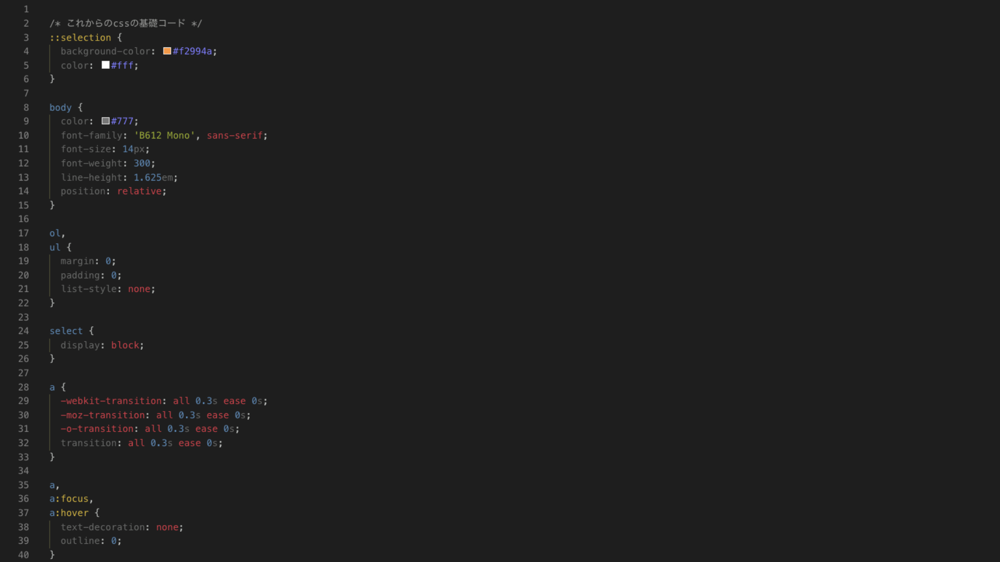
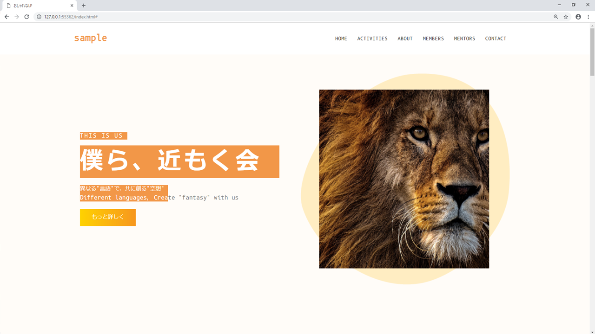
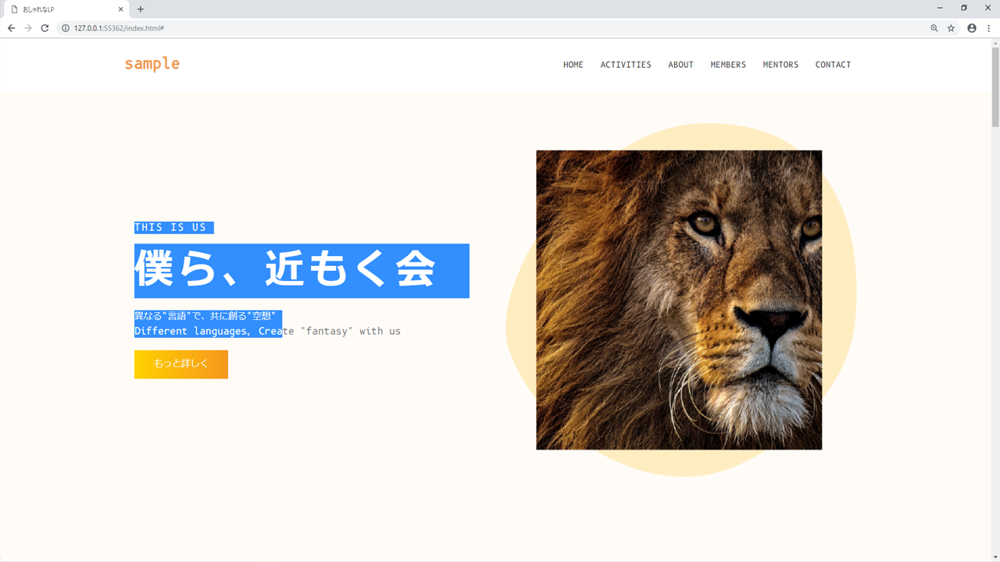

CSS
これから作っていくにあたって初めに 根本となるcss を書いておくとスムーズに開発が進みます。そのままでも構いませんが今回のように暖色がメインのページでは[color:#777;]のように少し白めのグレーのほうがページとの相性がいいです。逆に寒色では[#333]くらいの黒いグレーがいいです。

selection
さらにですが[ ::selection CSSセレクタ ]はこだわりましょう。デフォルトのモノよりもこだわりが見られるものの方が面白いです。ですがここもメインカラーに沿ったもの、そして「 background-color と color 」の二つぐらいのプロパティの適用にしましょう。多用すると見づらくなるので要注意です。

